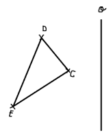
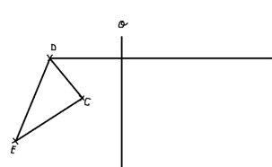
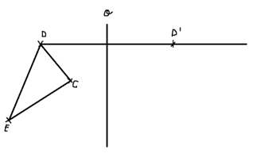
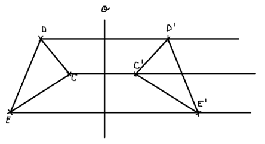

Osová souměrnost
Jsou to dva shodné tvary akorát je mezi nimi osa (např. o).
Rýsování
Tvé zadání:
Přímky
- udělás z bodu (D) přímku tence, takto 
Vzdálenost
- od osy (o) do bodu (D)si naměř kružítkem vzdálenost
- tu vzdálenost co máš tak si zapíchni kružítko do průsečíku přímky a osy a udělej oblouček (křížek) na přímku
- pojmenuj (D s čarou) (viz. obrázek:) 
- takhle to udělej z každého bodu co v obrazci máš
Výsledek
- vše spoj a mělo vy to zapadat takto: 